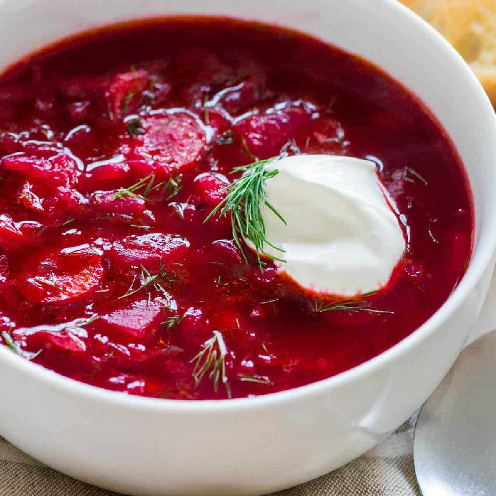
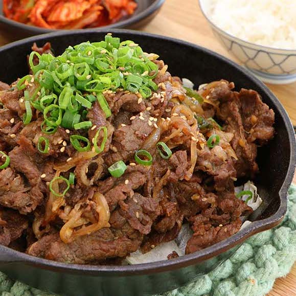

Plov (Плов)
Plov is a traditional dish from Uzbekistan made from rice, beef, carrots, and various spices.

Hummus (حُمُّص)
Hummus is a Middle Eastern dish made from chickpeas, tahini, olive oil, and depending on your recipe; garlic, lemon juice, and paprika.

Borscht (Борщ)
Borscht is a traditional Ukrainian soup that I grew up eating. It's made from beats, potatoes, broth, and sometimes meat. It is usually served with sour cream and dill

Bulgogi (불고기)
Bulgogi is a Korean dish that is made from barbecued beef. Bulgogi in Korean literally means "fire meat"